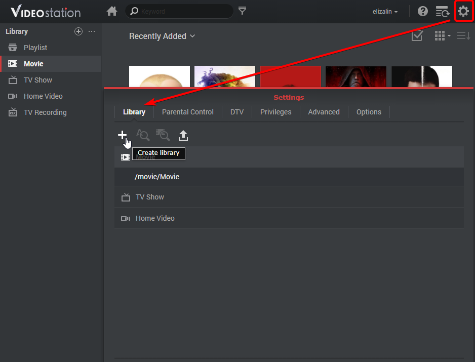
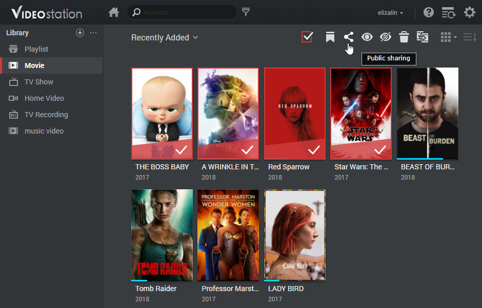

Überblick
Mit Video Station können Sie Ihre Videosammlungen einfach in verschiedene Standard- oder benutzerdefinierte Bibliotheken organisieren und kategorisieren. So können Sie Ihr gewünschtes Video viel effizienter suchen. Darüber hinaus kann die Wiedergabe und Freigabe von Videos genauso einfach und unkompliziert wie ein paar Mausklicks erfolgen.
1. Video Station installieren
Um Video Station zu installieren, gehen Sie zu Paketzentrum, suchen Sie Video Station und klicken Sie auf Installieren.

2. Videos in Standard-Bibliotheken speichern und kategorisieren
Video Station bietet drei Standard-Bibliotheken, wie im linken Feld angezeigt: Film, TV-Serie und Privatvideo. Um sicherzustellen, dass Ihre Videos korrekt indiziert und kategorisiert werden können, müssen Sie Videoordner für jede Bibliothek hinzufügen und anschließend Ihre Dateien zuerst in den entsprechenden Videoordnern abspeichern. Standardmäßig werden drei Videoordner im Freigabeordner Video für die drei Standard-Bibliotheken erstellt: Film, TV-Serie und Privatvideo. Zusätzlich zu diesen drei Ordnern können Sie jedoch auch folgendermaßen vorgehen, um weitere Videoordner für die Bibliotheken hinzuzufügen.
Das System führt automatisch eine Suche nach relevanten Metadaten und anderen Informationen (z. B. Anzeigebilder) für zwei Videotypen (Film und TV-Serie) aus dem Internet durch. Um zu gewährleisten, dass Ihre Videos mit den korrekten Informationen gekoppelt werden können, wird daher dringend empfohlen, dass Videos mit dem angegebenen Videotyp ihrer entsprechenden Bibliotheken übereinstimmen.
Videoordner für Standard-Bibliotheken hinzufügen
- Gehen Sie zu Einstellungen > Bibliothek.
- Klicken Sie auf das Symbol Ordner hinzufügen, um einen Ordner von Ihrem Synology NAS auszuwählen, und wählen Sie die Zielbibliothek aus. Sie können bis zu 100 Videoordner für eine Bibliothek hinzufügen; sobald jedoch ein Ordner ausgewählt wurde, können weder der Ordner noch seine Unterordner für andere Bibliotheken ausgewählt werden.
- Speichern Sie Videodateien in Videoordner ab, um Videos in entsprechende Bibliotheken zu kategorisieren.
- Jetzt können Sie Ihre gewünschten Videos aus den Bibliotheken durchsuchen und ansehen!


3. Videos in benutzerdefinierten Bibliotheken speichern und kategorisieren
Zusätzlich zu den drei Standard-Bibliotheken, auf die alle standardmäßig zugreifen können, können Sie als DSM-Admin oder als Benutzer der Gruppe administrators benutzerdefinierte Bibliotheken erstellen und Benutzern Zugriffsberechtigungen zuweisen.
Benutzerdefinierte Bibliotheken erstellen
- Gehen Sie zu Einstellungen > Bibliothek und klicken Sie auf das Pluszeichen, um eine Bibliothek zu erstellen. 
- Geben Sie einen Namen für die neue Bibliothek an, wählen Sie aus, welcher Videotyp in diesem Ordner gespeichert werden soll, und klicken Sie auf Öffentlich, wenn alle Benutzer darauf zugreifen können sollen, oder auf Privat, um den Zugriff auf bestimmte Benutzer mit Berechtigungen zu beschränken. Beachten Sie bitte, dass die in den Ordner abgelegten Videos mit dem hier gewählten Typ übereinstimmen müssen, um die Genauigkeit der aus dem Internet gesammelten Videoinformationen zu gewährleisten.
- Wenn Sie Privat auswählen, klicken Sie auf Berechtigungen zuweisen und markieren Sie die Kontrollkästchen, um Benutzer den Zugriff zu erlauben.
4. Videos wiedergeben
Nachdem Sie Ihre Videodateien in verschiedene Bibliotheken kategorisiert haben, können Sie nachstehende Schritte befolgen, um Ihre Videos auf Video Station wiederzugeben. Es wird dringend empfohlen, dass Sie zuerst den VLC Media Player (Windows, Linux) auf Ihrem Computer installieren. Zusätzlich zur Wiedergabe von Videos auf Ihrem lokalen Computer können Sie Ihre Videos auch an DLNA/UPnP-kompatible DMAs oder AirPlay-kompatible Geräte für die Videowiedergabe streamen.
Videos mit dem integrierten Video Player wiedergeben
- Wählen Sie einen beliebigen Videoclip zur Wiedergabe aus und klicken Sie auf das Wiedergabesymbol auf dem Videobild.
- Das Video sollte sofort wiedergegeben werden. Vergewissern Sie sich andernfalls, dass das Format Ihres Videos von Ihrem Webbrowser unterstützt wird, oder Sie das VLC-Plugin auf Ihrem Computer installiert haben.
- Verwenden Sie nach Bedarf die Bildschirm-Schaltflächen sowie den Fortschrittsbalken am unteren Rand des Video Players. Sie können auch die Lautstärke anpassen, die Qualität der Videowiedergabe und die Audiospur auswählen, Untertitel aktivieren, oder das Video an andere Geräte streamen (sofern verfügbar).


Detaillierte Informationen über das VLC-Plugin sowie unterstützte Geräte finden Sie unter Hilfe zu DSM > Video Station > Videowiedergabe.
5. Videos für die Öffentlichkeit freigeben
Mit der Funktion zur öffentlichen Freigabe können Sie Ihre Videos per Video Station einfach für andere Personen freigeben, d.h. alle freigegebenen Videos sind für alle Benutzer über einen Link öffentlich zugänglich.
Videos für andere freigeben
- Gehen Sie zu einer beliebigen Videobibliothek und klicken Sie oben links auf Alle, um alle Videos in dieser Bibliothek anzuzeigen.
- Klicken Sie auf das Symbol Auswahlmodus oder halten Sie die Taste Strg oder die Umschalttaste gedrückt, um mehrere Videos auszuwählen. Klicken Sie anschließend auf das Symbol Öffentliche Freigabe.
- Wenn Sie nur ein Video zur Freigabe ausgewählt haben, wird das Video einer freigegebenen Sammlung mit dem Namen Freigegebene Videos hinzugefügt. Dort können Sie alle Videos verwalten, die Sie nacheinander freigegeben haben.
- Wenn Sie mehrere Videos zur Freigabe ausgewählt haben, werden die Videos in einer neuen freigegebenen Sammlung gruppiert. 
- Geben Sie bei Bedarf einen Gültigkeitszeitraum an.
- Sie können auch auf das Symbol Mehr auf dem Bild eines bestimmten Films und anschließend auf Öffentliche Freigabe klicken, um das ausgewählte Video zu Freigegebene Videos hinzuzufügen.
- Kopieren Sie einfach den Link in E-Mails, Sofortbenachrichtigungen und Webseiten, um die Videos für alle freizugeben.

6. Videos auf Mobilgeräten organisieren und ansehen
Um eine Verbindung zu Video Station über Mobilgeräte herzustellen, können Sie DS video mit iOS-/Android-Geräten über nachstehende QR-Codes herunterladen, um Videos bzw. Videosammlungen auf Ihrem Mobilgerät abzuspielen und zu organisieren, oder an Ihre DMAs oder AirPlay-Geräte sowohl zu Hause als auch unterwegs zu streamen.